Antivirus & Security
Check Windows Security, firewall and threat history using your Windows 11 screens.
Scroll down to read all 10 steps.
These screenshots show example security warnings. If your PC shows warnings, firewall off, or severe threats, contact IT promptly. Do not change protection settings, reset settings or use Fresh start.
Security at a glance
Open Start → Windows Security → Home. Look for red crosses or yellow warnings. The example shows protection OFF. If you see these warnings on your PC, contact IT promptly; do not change any settings.
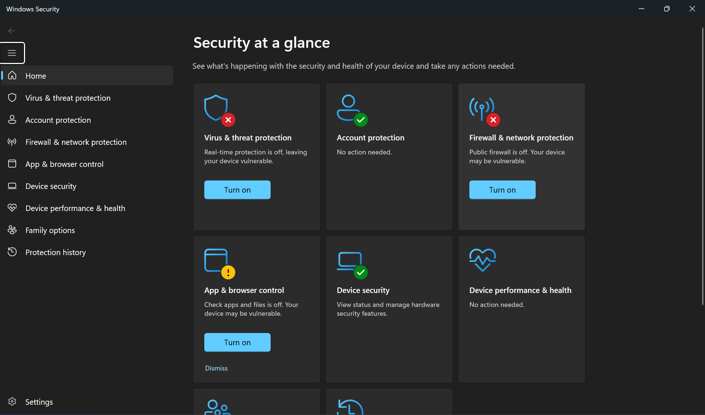
Virus & threat protection
Open Virus & threat protection. Check both “No current threats” and the section below: “Virus & threat protection settings”. This example shows real-time protection OFF. Report that to IT; do not press Turn on without instructions.
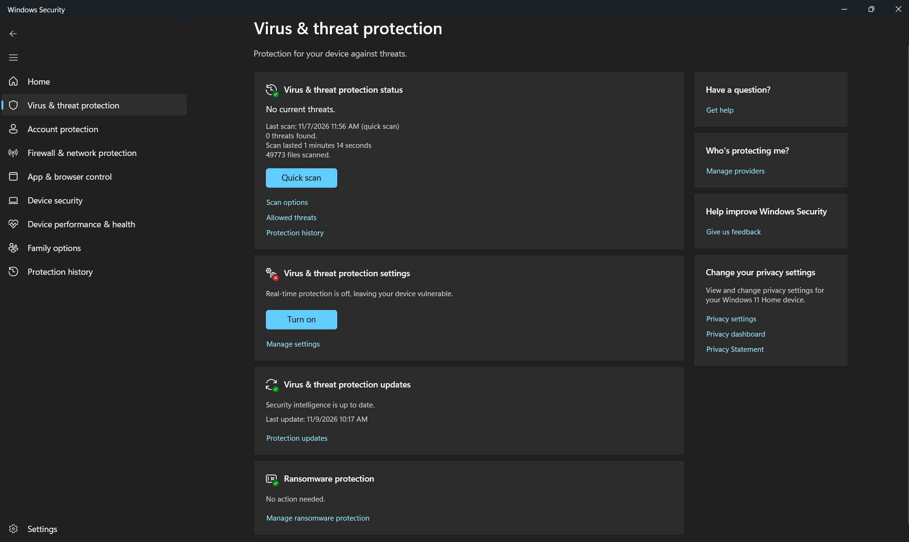
Account protection
Select Account protection and check for warnings. “Not signed in with Microsoft” may be normal on a managed work PC. Do not add your personal account.
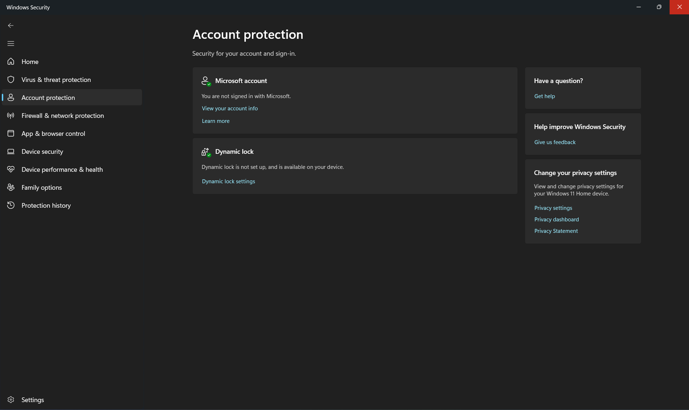
Firewall & network protection
Open Firewall & network protection. Check for warning banners and find the ACTIVE network type. In this example, Public firewall is OFF. Contact IT if the active firewall is off; do not use Restore settings.
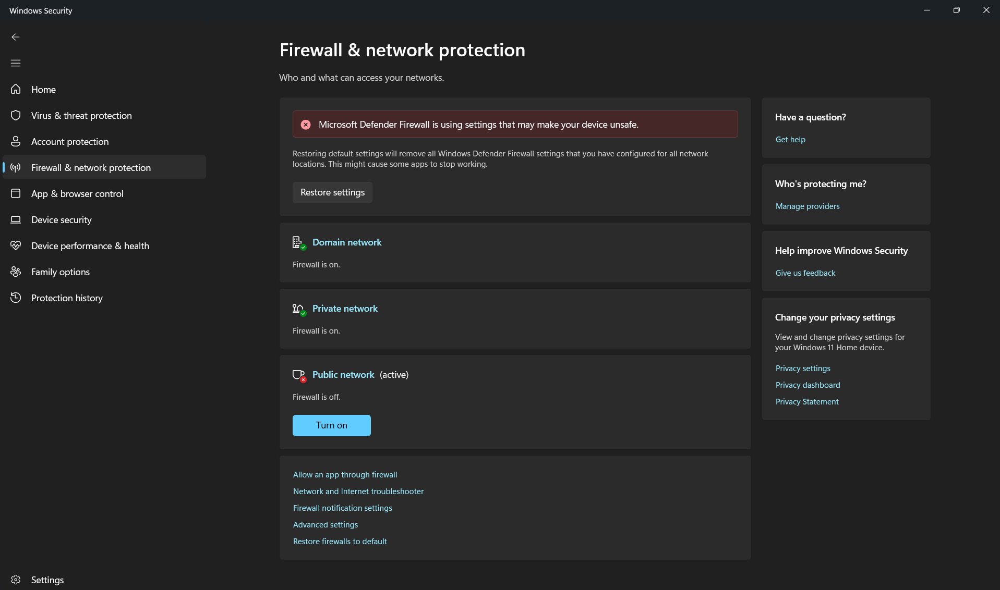
Check the active firewall profile
Select your active network profile (Public, Domain or Private). Note whether its firewall is On or Off. These examples show Public OFF and Domain/Private ON. Do not switch networks or change firewall settings.
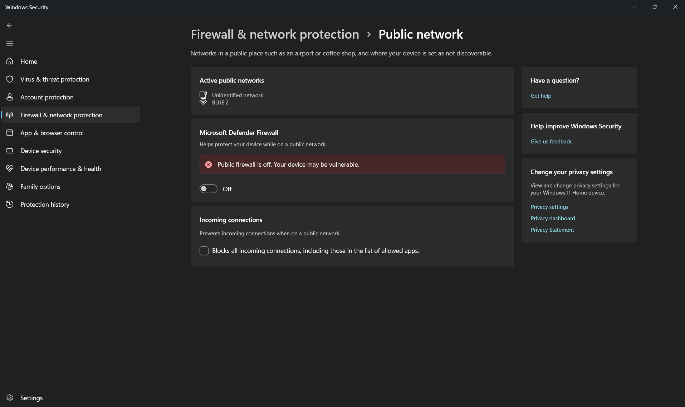
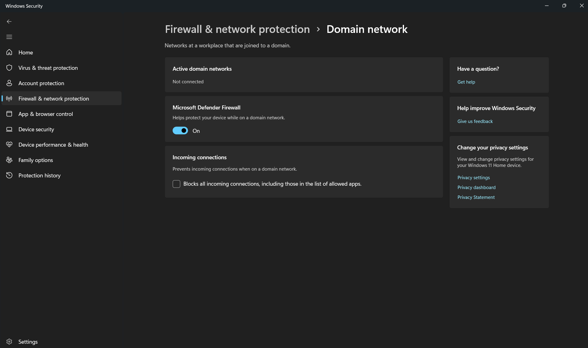
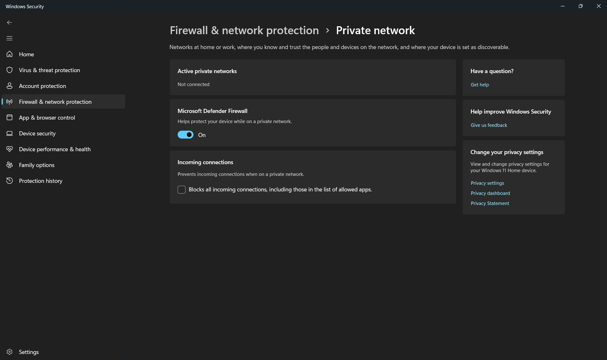
App & browser control
Open App & browser control. Check reputation-based protection for yellow warnings such as “Check apps and files is off”. Report warnings to IT; do not change security policy.
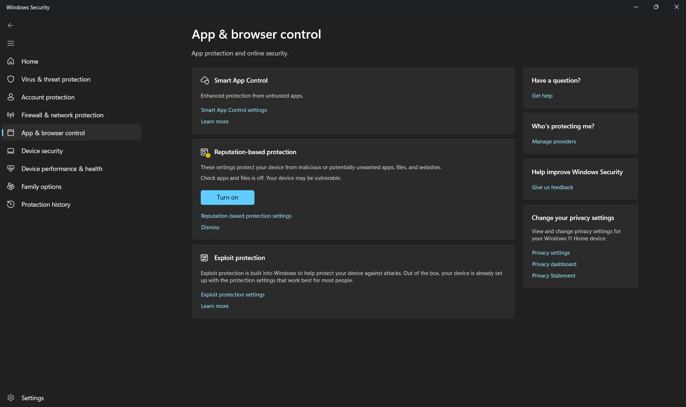
Device security
Open Device security. Review Core isolation, Secure Boot and Security processor. Note any red or yellow symbols, but do not change hardware security settings.
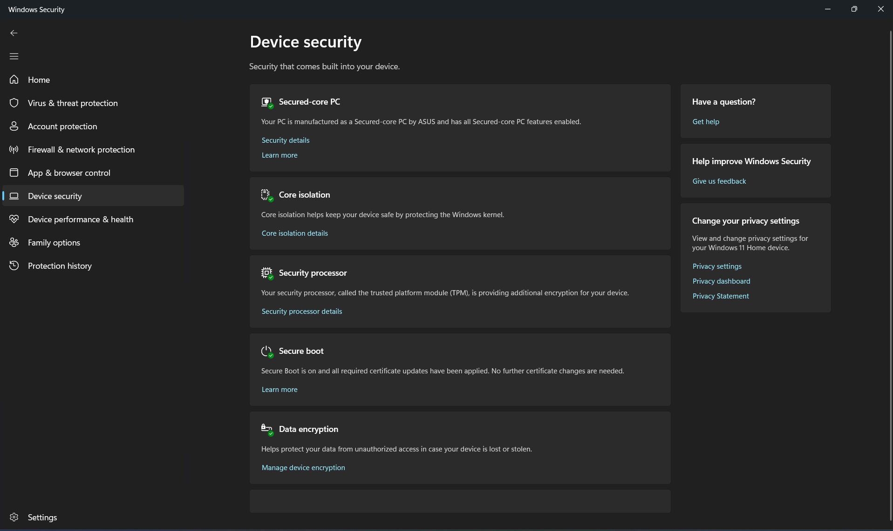
Device performance & health
Open Device performance & health. Read Health report and note warnings or recommendations (for example, Windows Time service). Do NOT select Fresh start.
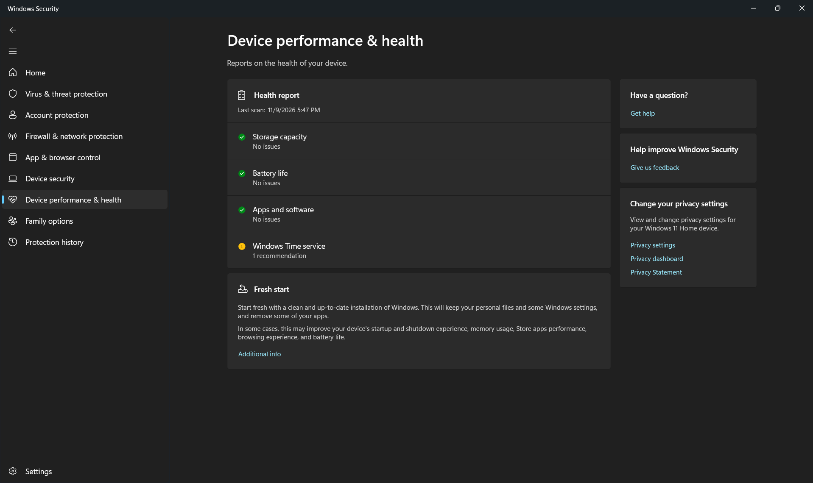
Family options (reference only)
This screen is included from your supplied screenshots. No action is needed for a normal employee check. Select Done after you recognise this screen. Do not set up parental controls.
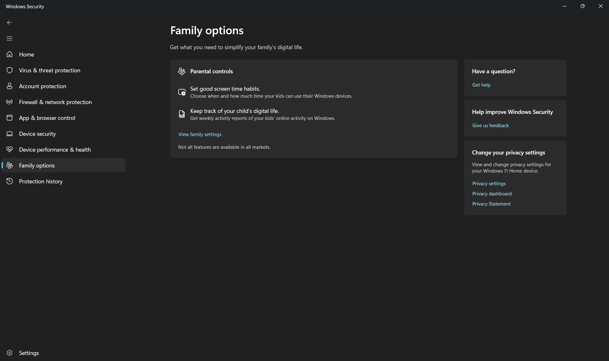

Protection history
Open Protection history and review recent security events. The example shows firewall and real-time protection warnings plus blocked/quarantined threats. If a High or Severe threat appears on YOUR PC, contact IT immediately.
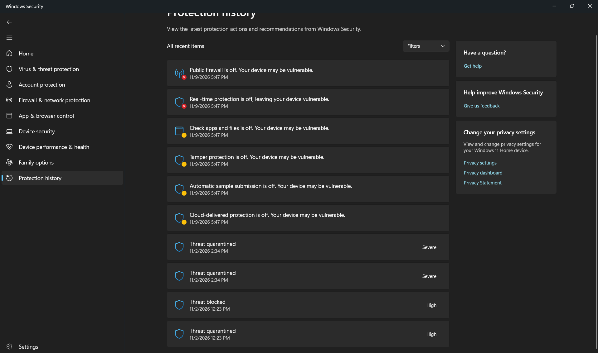